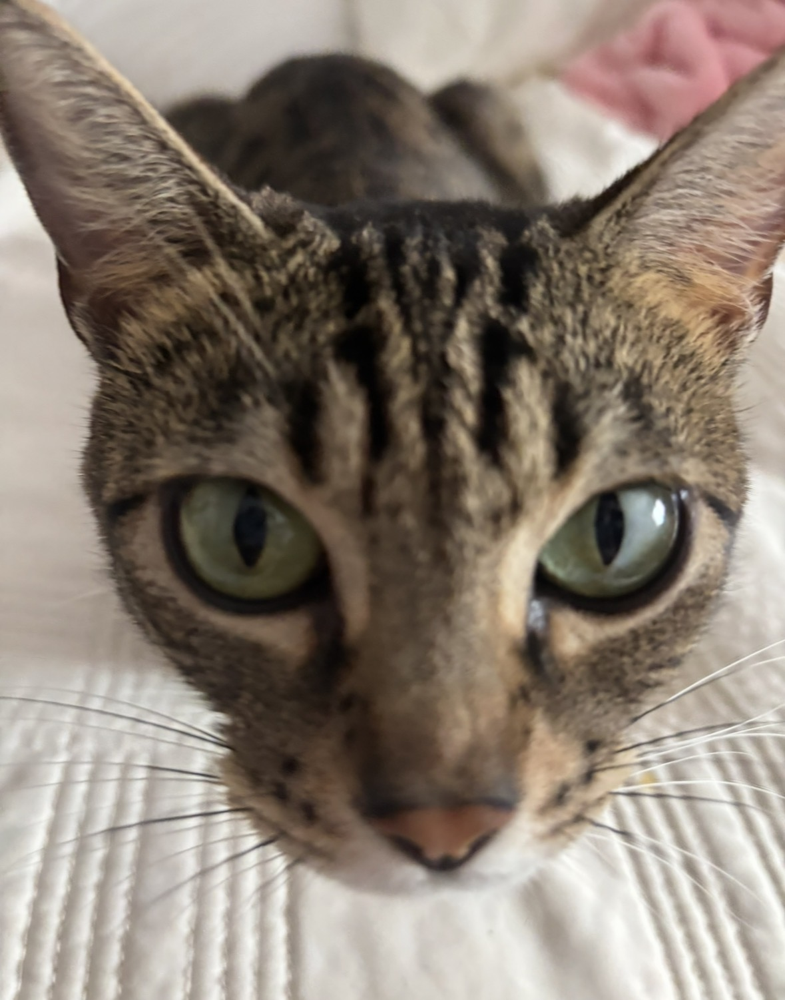
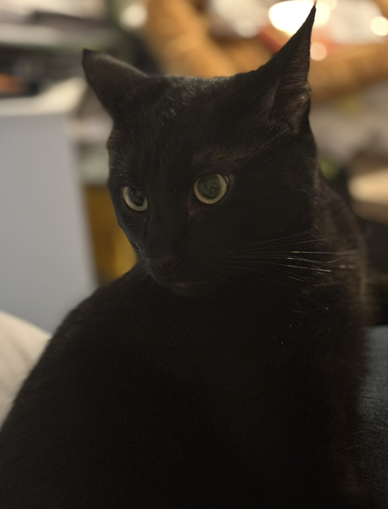
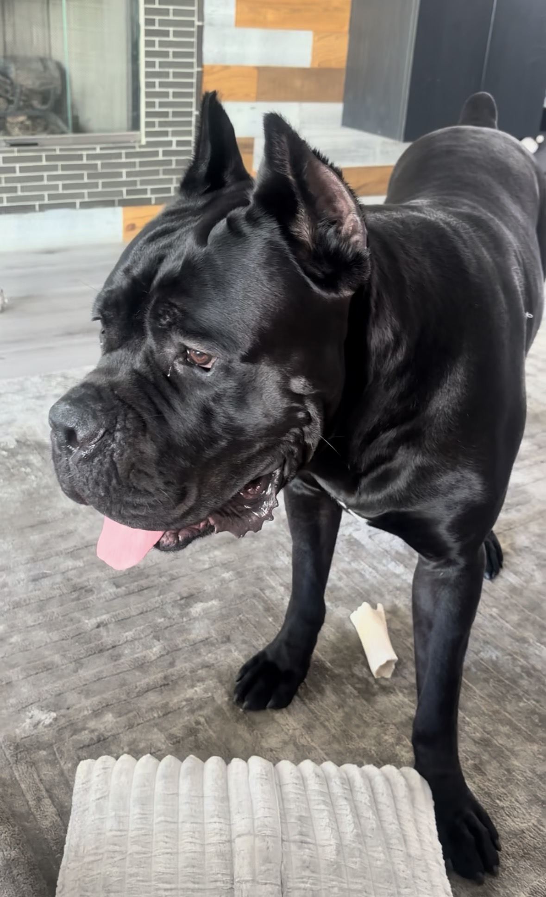
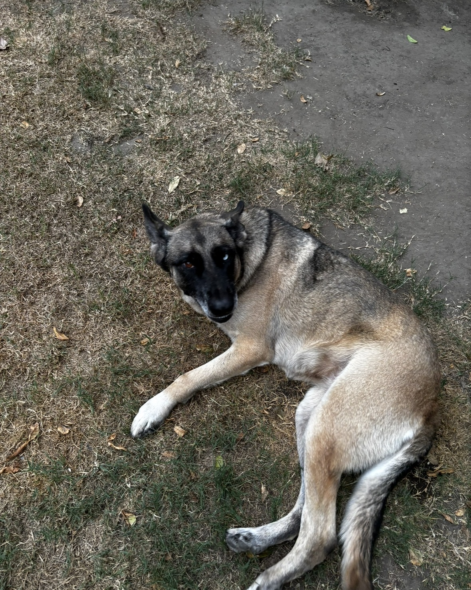
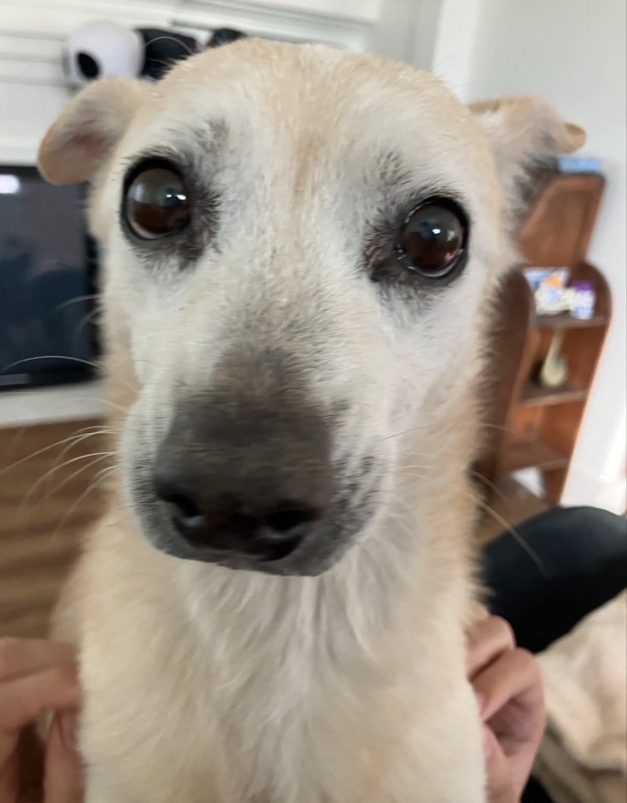
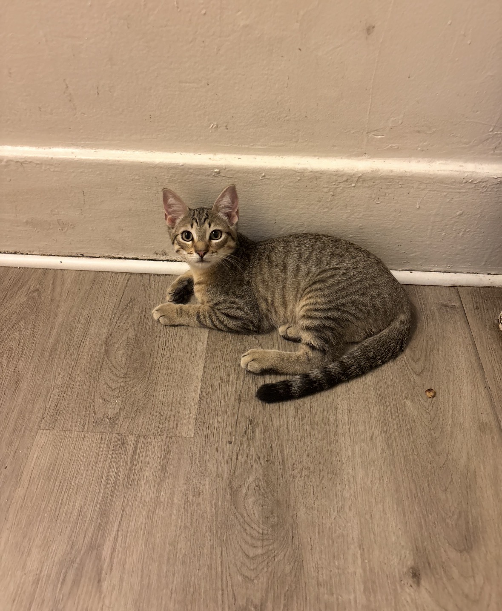

Muñeca

Muñeca is a friendly tabby cat who enjoys sunbathing, gentle pets, and relaxing near a window.
Learn more about tabby cats >>
Muñeca is a friendly tabby cat who enjoys sunbathing, gentle pets, and relaxing near a window.
Learn more about tabby cats >>
Louise is a reserved but curious black cat. She loves chasing toys and exploring every corner of the house.
Learn more about black cats >>
Tyson is a Cane Corso with a big personality. He is playful, energetic, and always ready to create some chaos.
Learn more about Cane Corsos >>
Lobita is a Belgian Malinois who is energetic, loving, and gentle. She is always ready for playtime.
Learn more about Belgian Malinois >>
Toby is a gentle Chihuahua who enjoys cuddling, soft blankets, relaxing, and taking long naps.
Learn more about Chihuahuas >>
Dante is a social and playful tabby cat. He is always stirring up trouble and keeping everyone entertained.
Learn more about tabby cats >>Every animal has a unique personality. Some are playful, some are relaxed, and others are always looking for attention.
Pets bring companionship, comfort, and happiness into our lives. They each have their own habits, personalities, and special ways of showing affection.
View pet care tips >>Taking care of an animal means providing healthy food, fresh water, exercise, grooming, attention, and a safe place to rest. Most importantly, pets need patience and love.
Give pets nutritious food and fresh water every day.
Toys, walks, and play help pets stay active and happy.
A safe and comfortable space helps pets feel secure.
Scratching posts help cats stay entertained and protect furniture.
Regular grooming keeps pets clean and comfortable.
Daily activity helps cats and dogs stay healthy.
Routine checkups help prevent health problems.
Patience and affection help build trust with every pet.